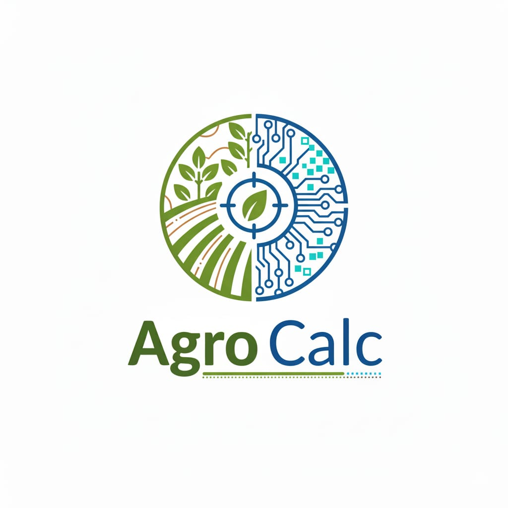

AgroCalc
CEPI
AgroCalc Integrado – Teor + Quantidade
Teor de Magnésio (Mg %)
Teor de Cálcio (Ca %)
Tipo de Calcário:
Calcítico
Dolomítico
Área:
hectares (ha)
m²
Quantidade recomendada por área:
t
kg
Calcular